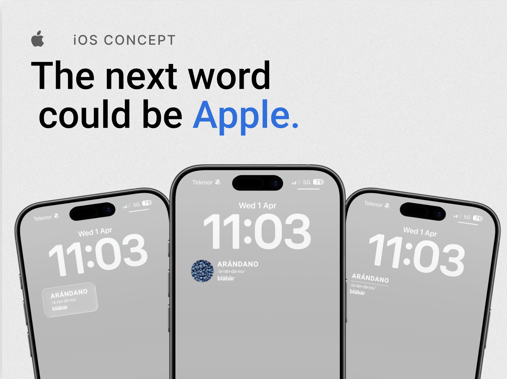
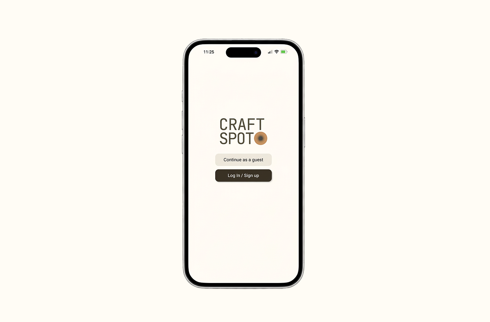

UX/UI Designer | Lund, Sweden
hilda
case studies
see all projects
01. peripheral encounters
designing lock screen widgets for vocabulary learning

02. craftspot
connecting local makers with people looking for handcrafted goods
Hi, I’m Hilda Hammer, a UX/UI designer based in Lund, Sweden. I enjoy combining design and technology to create digital experiences that feel simple, intuitive, and enjoyable to use. With a background in UX design and web development, I’m passionate about interface design, prototyping, and solving problems from a user-centered perspective. I’m curious, open-minded, and thrive in collaborative environments where ideas can grow into meaningful solutions.